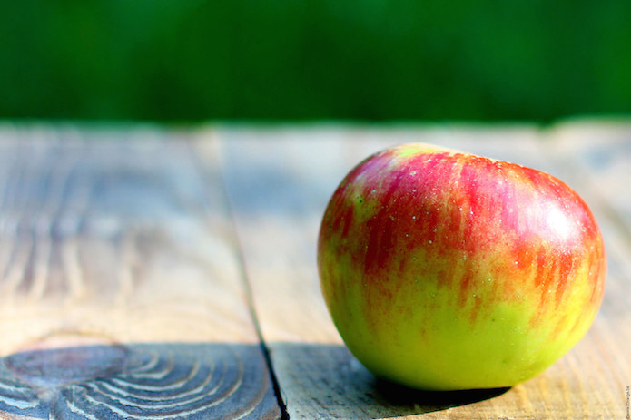
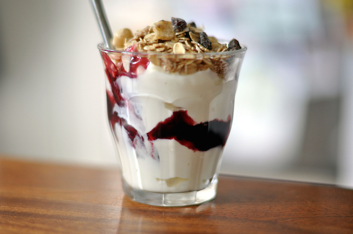
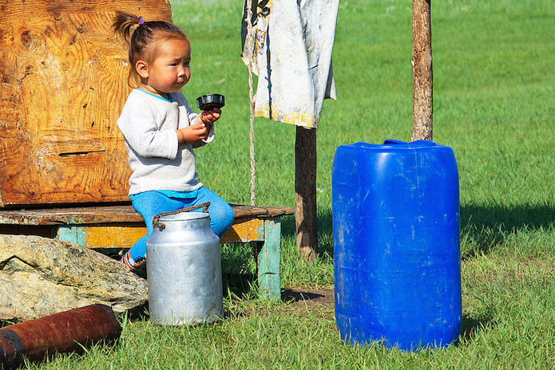

Five innovations in nutrition and hydration
To mark nutrition and hydration week, we asked you for top data innovations in nutrition and hydration. Examples came from around the world, from obesity monitoring to promoting yoghurt’s health benefits

While an apple a day might not keep the doctor away, these innovations will help improve nutrition and hydration around the world. CC BY 2.0, uploaded by [tOrange](https://www.flickr.com/photos/torange-biz/14784889249/in/photolist-owuqtB-qWgZJF-bdy2hZ-99MHtC-diudRd-kJTAWx-e1RwnD-b5Es9p-7WhtNb-jNQ55-brkcnn-5CrEZy-4u3UMW-8zrmKn-8ruTJn-8XggbP-5mcfSg-78ypBr-cmnGBL-kJUuJZ-ksHyH-aAK8xT-6L6Hfj-nFGSCe-8XgfNr-ewhZMs-JMpS1-kJUpCg-7EFHhM-4u3ToA-nHVRm-fyDXk4-dGXoVJ-e9gQQf-5xXEHk-a9N77m-fyDW8v-9XzRzZ-jzSfEq-91BjpH-6uFg4y-5rfhQ6-dntVS-7AXvC-B89QUA-7AYGc-Dt4iaJ-rzXwQG-7SvXLP-7AXwQ “tOrange").
By Hannah Foulds and Anna Scott
Here are five of the top innovations you sent us.
1. Monitoring obesity in Africa
Obesity is a growing problem in Africa. The World Health Organisation estimates that 12.7% of African children will be obese by 2020, compared with 8.5% in 2010. But the African Centre for Obesity Prevention (Action) is on a mission to prevent and manage this through evidence-based action.
Based at the University of the Witwatersrand in Johannesburg, Action is focused on summarising and disseminating data and trends in obesity to the public, government and media, and encouraging lifestyle change to prevent and manage obesity across the continent.
Childhood obesity has increased dramatically in the past 25 years. CC BY 2.0, uploaded by Luigi Guarino.
2. Mapping food insecurity
Reliable information is critical to understanding food security trends, assessing crises and informing decision-making. However, according to a report by ALNAP, traditional methods for collecting this information – in particular food security data at household level – are often expensive, slow and cumbersome, which limits its effective use for decision-making.
The UN World Food Programme’s Vulnerability Analysis and Mapping (VAM) team is collecting food security data remotely. They’re collecting through short phone surveys, SMS, live telephone interviews and an interactive voice response system. This data is then presented through an open access website and open databank.
3. Discovering the truth about yoghurt
The Yoghurt in Nutrition Initiative is a multi-year global, collaborative project to uncover scientific data related to yoghurt and identify gaps in our understanding of its health effects.
This project is led by the Danone Institute International in collaboration with the American Society for Nutrition and International Osteoporosis Foundation, which aims to evaluate the current evidence base on the nutritional impact of yoghurt.
 It's still healthy if it's mostly yoghurt, right? CC BY 2.0, uploaded by [cyclonebill](https://www.flickr.com/photos/cyclonebill/4776711227/in/photolist-8h6TQ8-8cspt9-sBmvuu-6EbT4A-b8waan-5JAJA7-6EbRYQ-dUgUFo-8swzf2-7NwEdD-isi5Q-7hdDJi-2piwrZ-brdUhS-bW5BhA-91UXV1-4XwC7N-eYCgS9-57XwhZ-5jxjf-DvZk3-7VNTFz-aQHZz-ffhGoT-4onH9R-chRzP-dgL9Nw-4sTDy2-4sTDuF-dCXiL3-ckT823-8pk3zP-6AgjiC-n3Cbdg-8PprjG-87fpEg-3ZDCUb-7w4ZWr-8pk3yX-8pok4b-4HfoX6-9DJxdF-8pk9oH-9LYMKp-59rKXk-ckT92Y-suQdBv-8pkfHB-8pkfHZ-akJBwS “cyclonebill").
4. Mapping and monitoring water and sanitation sites
A nonprofit tech startup has created an app for mobile phone users to instantly test and analyse water quality from local sources and share this information on their global, open-source water monitoring database.
Dedicated to creating world changing technologies for water and health, mWater has over 6,000 free users in 59 countries. They map and monitor water and sanitation sites, conduct mobile surveys and collaborate with local governments using real-time data.

A Kazakh girl drinking water. CC BY 2.0, uploaded by [Scott Presly](https://www.flickr.com/photos/kodok/7980795251/in/photolist-daeEo8-o52GpW-dAcB7b-dp5Hiq-FNPKH-894x1V-98aGRk-2dswTt-2dsyNZ-7EQhs7-gKaqw3-aMMtvn-faviNc-sJDU2s-d6AVFN-2dstet-fTwSAN-hqd1Nb-54Rats-9i3waJ-W9rbC-fzDZbY-bxTTFn-E4iVWH-pfM1zo-efEDFH-4dnZrQ-48WCrH-ejsr6x-7TDMUw-sugB9f-6DUmjK-qZs7oy-5TCeF2-982Mc4-pmiruD-6EH46p-supjs7-rQbcaR-sLYzNx-jg17Mu-o9Jbm6-cuUgVo-dp5UPy-fjoyEA-5fmc2G-9BKuid-qEdtNq-5izSvP-98dQS5 “Scott Presly").
5. Diabetes tracker app
This one comes from a member of our very own team at the Open Data Institute. Our Head of Robots, Sam Pikesley, has found a creative way to track his own diabetes. He’s developed an app, optimised for his own mobile, which records his blood glucose, medication, carbs and more.
Sam says:
I find that the best way of dealing with my condition is to (attempt to) master it, and for me that means tracking everything about it. I have used various smartphone apps in the past, but none of them were ever quite right for me, and this is about dealing with my diabetes, so I built this thing. I have basically put an API on my own pancreas.
Hannah Foulds is a Digital Marketing Manager, and Anna Scott is Writer / Editor at the ODI. Follow @annadscott on Twitter.
If you have ideas or experience in open data that you'd like to share, pitch us a blog or tweet us at @ODIHQ.